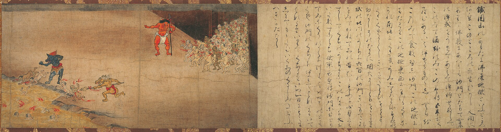

Japan with
Japan withAt first glance, the image seems to answer the title immediately: ancient Japan imagined hell as fire, mutilation and terror. In one 12th-century scroll, black smoke and vermilion flame almost erase the horizon. Elsewhere, sinners meet iron mortars, sword-leaf trees, boiling cauldrons, predatory beasts and a river of ash. The punishments can feel as inventive as modern horror.
But “hell” is misleading if it suggests one eternal destination ruled by a Japanese Satan. These pictures belong to a Buddhist map of repeated rebirth. Hell was one possible realm, entered because of karma and eventually left when that karma was exhausted. The image did not merely say, “This monster waits below.” It asked the viewer to connect conduct in this life with suffering in the next—and then to imagine another path.
Hell was part of a much larger map
The six paths, or rokudō, arrange existence as unstable states rather than permanent identities. Heavenly beings enjoy extraordinary lives but still die. Humans suffer, yet human birth offers an especially valuable chance to encounter Buddhist teaching. Animals, fighting asuras, hungry ghosts and hell beings express other forms of delusion and pain. Death moves a being onward; no realm provides a fixed home.
Interest in this map intensified late in the Heian period (794–1185). The Kyoto National Museum connects its Hungry Ghosts Scroll to belief in mappō, the latter days of Buddhist law, widely thought in Japan to have begun in 1052. The Tokyo National Museum also places the rise of Six Paths imagery amid weakening court power and social anxiety. Those statements describe a historical climate, not a simple cause: the paintings drew on sutras, ritual, patronage and visual traditions moving across East Asia.
A scroll made fear unfold in time
The surviving Jigoku zōshi are handscrolls, or emaki. A reader did not see the whole inferno mounted on a museum wall. The scroll lay horizontally and opened section by section, normally from right to left. Text prepared the scene; then an image appeared. One hand revealed the future while the other rolled the past away.

That physical action matters. The Metropolitan Museum explains that handscrolls were intimate objects, viewed in limited spans, with an almost cinematic sequence. Hell therefore arrived as suspense, not a diagram. Flames could enter from beyond the opened section. A body could be shown at the instant before consequence. The viewer controlled the pace but could not make the painted result disappear without deliberately rolling it shut.
The demons were workers, not the ultimate point
Modern viewers naturally focus on the ogres. Often called oni, they function in these scenes more like relentless officers of consequence than an independent evil power. Other images foreground Enma, the king and judge of the dead, with clerks, records and a mirror that reveals misdeeds. This judicial underworld drew on continental traditions; the familiar Japanese afterlife was never culturally sealed from China, Korea or India.
The punishments are specific because the texts were specific. The Nara National Museum’s National Treasure scroll illustrates seven scenes derived from descriptions of sixteen subsidiary hells: excrement, thirst, cauldrons, an iron mortar, a flaming rooster, a river of ash and more. Its related scroll for fallen monks shows a boiling river reserved for breaches such as eating meat and drinking alcohol. These are visual arguments aimed at particular audiences, not a neutral travel guide to the afterlife.
Nor did every Japanese person believe every scene literally. “Ancient Japan imagined” must not become “all Japanese believed.” Court patrons, monks, artists, ritual specialists and later popular audiences met these images in different ways. The surviving works reveal powerful forms of imagination, not a national opinion poll.
From elite scrolls to pictures shown in public
Over time, hell expanded beyond intimate courtly handscrolls. Paintings of the Ten Kings staged the afterlife as a sequence of trials. Temple displays, preaching pictures and etoki—spoken explanation performed before an image—made cosmology accessible to audiences who did not need to read a sutra. In the early modern period, Kumano nuns carried mandalas and explained the ten worlds, the human life cycle and routes of salvation. The picture became a portable theater of consequences.
Hell could also become comic, satirical and spectacular. Edo-period prints place Enma in jokes, send famous characters below, or turn the underworld into crowded bureaucracy. A terrifying system was memorable enough to parody. That is a sign of cultural familiarity, not proof that fear had vanished.
Where to see the originals—and the limits
The principal 12th-century works belong to the Tokyo National Museum and Nara National Museum, with related hungry-ghost material at the Kyoto National Museum. Their online e-Museum records provide high-resolution images and English explanations. Gallery rotations are essential for conservation, so collection ownership never guarantees physical display. Check the museum’s current exhibition page before traveling, expect photography restrictions, and never use flash where photography is allowed.
Online viewing lets you zoom into fire, faces and brushwork. Seeing the real object restores scale. These are long but relatively low scrolls, close to the dimensions of something handled and read—not giant portals surrounding the body. Their horror began at arm’s length.
The afterlife that still speaks Japanese
Words from this system remain familiar: jigoku (地獄) means hell; Enma is the judge of the dead; gaki names hungry ghosts. Contemporary manga, anime, games and seasonal storytelling freely remix them, often separating creatures from their Buddhist framework. Knowing the older visual grammar makes those reinventions easier to see.
For another supernatural threshold, continue to Japan’s old wells and the changing story of Okiku. Practice the Japanese words here at the free, no-signup Japanese Training Lab, or learn while playing in DraMap, the iOS app created by this site’s editor.
To place old images beside living Japan, walk real streets and cultural places with Yuji on TikTok LIVE. The scrolls imagine another world; the live walk restores the temples, museums and ordinary city around them.
Reporting sources
- e-Museum / Tokyo National Museum: Hell Scroll.
- e-Museum / Nara National Museum: Tales of the Buddhist Hells.
- Nara National Museum: Shamon Jigoku zōshi.
- e-Museum / Kyoto National Museum: Gaki Zoshi.
- The Met: “Japanese Illustrated Handscrolls”.
- The Met: Hall of Enma, the King of Hell.
- Japan Tourism Agency: Nachisan Shrine Mandala and Kumano preaching.
Sources and links rechecked November 21, 2026 (JST). Historical traditions are documented here without treating supernatural realms as empirically verified places.

Keep exploring with Yuji
Yuji Shimizu researches and edits Japan Unfolded in Japan and created DraMap. These are the publisher’s own invitations, not third-party endorsements.